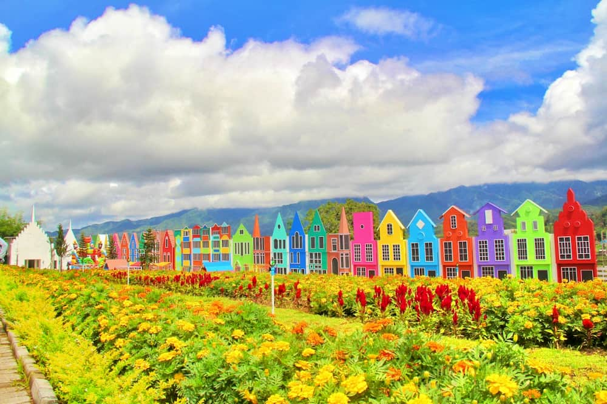
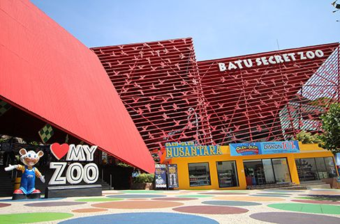

Museum Angkut
Jl. Terusan Sultan Agung No.2, Ngaglik, Kec. Batu, Kota Batu, Jawa Timur 65314
Deskripsi
Family Friendly
Beragam Transportasi
Wisata Kendaraan
Pemandu Wisata
Museum Angkut adalah museum transportasi pertama di Asia Tenggara yang terletak di Kota Batu, Jawa Timur. Museum ini memiliki luas sekitar 3,8 hektar dan memiliki koleksi lebih dari 300 jenis angkutan tradisional hingga modern dari berbagai belahan dunia.Museum Angkut terbagi dalam beberapa zona yang didekorasi dengan setting landscape model bangunan dari benua Asia, Eropa hingga Amerika. Beberapa zona yang ada di Museum Angkut antara lain:
- Zona Sunda Kelapa dan Batavia
- Zona Istana Buckingham
- Zona Gangster Town
- Zona Pasar Apung Nusantara
- Zona Broadway Street
- Zona Museum Transportasi
Wisata Serupa Lainnya

Flora Wisata San Terra
Lihat Selanjutanya

Museum Angkut
Lihat Selanjutanya
Eco Green Park
Lihat Selanjutanya

Batu Secret Zoo
Lihat Selanjutanya